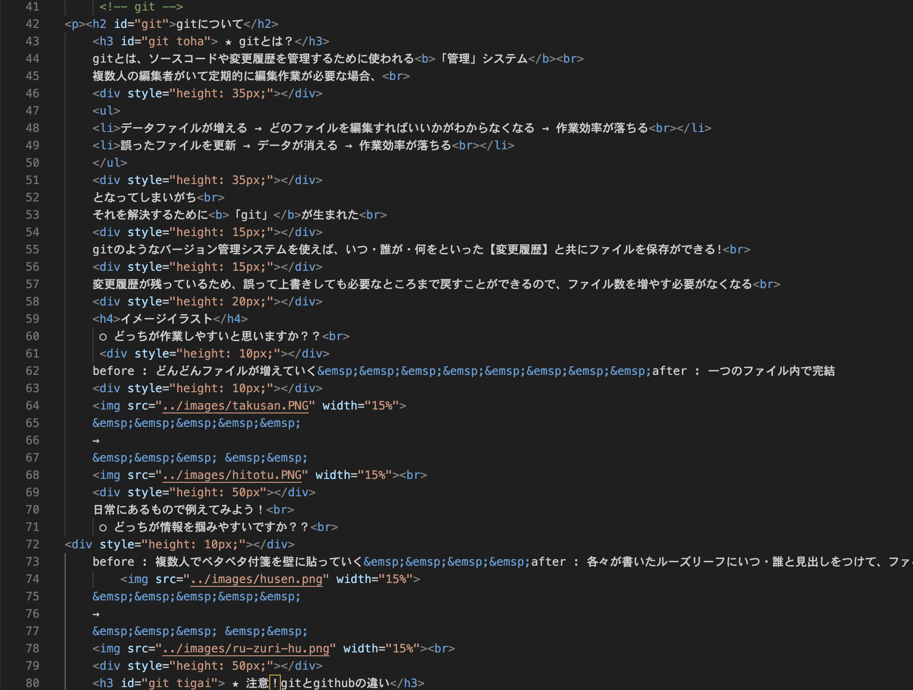
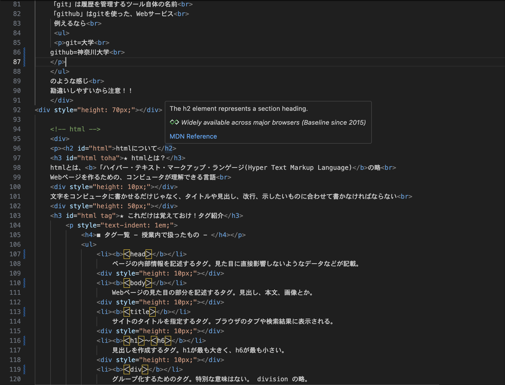

gitについて
★ gitとは？
gitとは、ソースコードや変更履歴を管理するために使われる
「管理」システム
複数人の編集者がいて定期的に編集作業が必要な場合、
- データファイルが増える → どのファイルを編集すればいいかがわからなくなる → 作業効率が落ちる
- 誤ったファイルを更新 → データが消える → 作業効率が落ちる
となってしまいがち
それを解決するために
「git」が生まれた
gitのようなバージョン管理システムを使えば、いつ・誰が・何をといった【変更履歴】と共にファイルを保存ができる!
変更履歴が残っているため、誤って上書きしても必要なところまで戻すことができるので、ファイル数を増やす必要がなくなる
イメージイラスト
○ どっちが作業しやすいと思いますか？？
before : どんどんファイルが増えていく after : 一つのファイル内で完結
→
日常にあるもので例えてみよう！
○ どっちが情報を掴みやすいですか？？
before : 複数人でペタペタ付箋を壁に貼っていく after : 各々が書いたルーズリーフにいつ・誰と見出しをつけて、ファイルノートに保管
→
★ 注意！gitとgithubの違い
「git」は履歴を管理するツール自体の名前
「github」はgitを使った、Webサービス
例えるなら
のような感じ
勘違いしやすいから注意！！
htmlについて
★ htmlとは？
htmlとは、
「ハイパー・テキスト・マークアップ・ランゲージ(Hyper Text Markup Language)の略
Webページを作るための、コンピュータが理解できる言語
文字をコンピュータに書かせるだけじゃなく、タイトルや見出し、改行、示したいものに合わせて書かなければならない
★ これだけは覚えておけ！タグ紹介
◼︎ タグ一覧 - 授業内で扱ったもの -
- ＜head＞
ページの内部情報を記述するタグ。見た目に直接影響しないようなデータなどが記載。
- ＜body＞
Webページの見た目の部分を記述するタグ。見出し、本文、画像とか。
- ＜title＞
サイトのタイトルを指定するタグ。ブラウザのタブや検索結果に表示される。
- ＜h1＞〜＜h6＞
見出しを作成するタグ。h1が最も大きく、h6が最も小さい。
- ＜div＞
グループ化するためのタグ。特別な意味はない。 division の略。
- ＜br＞
改行するためのタグ。 break の略。
- ＜img＞
画像を表示させるタグ。
imgタグの src 属性に画像を記載。 width 属性で幅を指定できる。
形： ＜img src="./ 画像の記載 " width="○%"＞
[階層について]
src=の後のドット「.」は階層を表している。
「./」は同じ階層、そこから「.」が増えるごとに階層が上がっていく。
【注意】 スマホなどで撮影した写真は解像度が高く、サイズが大きい。
そのまま記載してしまうと、表示スピードが遅くなってしまう可能性があルため、必要に応じて写真サイズを変える必要がある。
- ＜li＞
リストの各項目を記述するタグ。 list item の略。
- ＜a＞
リンクを埋め込むタグ。 anchor の略。
- ＜ol＞
順序(1.2...)のある箇条書きリストのタグ。 ordered list の略。
- ＜ul＞
順序のない箇条書きリストのタグ。 unordered list の略。
★ 実際に見てみよう！活用
今見ているこのページの実際のhtmlがこんな感じです！


ぜひ見比べてください！！
↓ 授業内で扱ったもの以外にこのHPを作る際に使ったタグや特殊文字、情報など
- ＜b＞
文字を太文字にするタグ。
- ＜p＞
テキストの段落を作成するタグ。
＜br＞は文章中に改行、＜p＞で囲った文章の前後に1行の改行が発生。
- 属性とは
タグを使うときのオプションのようなもの。
基本の形：＜タグ 属性="属性値"＞＜/タグ＞
今回は
- ＜img＞で src
- ＜a＞で href
- ＜div＞で style height
- ＜h2＞＜h3＞で id
を使用。
- ページ内リンク(目次部分)の作り方
見出しの部分(gitについて、htmlについてなど)に id属性 を使って名前(識別子)を付ける
＜a＞タブで指定。
- 空白の入れ方
＜div style="height: ○px;"＞＜/div＞
○の部分に数字を入れる。
- 特殊文字での空白の入れ方
「＆nbsp;」を入れる。
大きさの少しずつ違う空白として、「＆ensp;」「＆emsp;」「＆thinsp;」がある。
- 緑色の文字の意味と使い方
コメント。メモ書きのようなもの。ブラウザには表示されない。自分や他の人がコードを見たときにどこに何が書いてあるかわかるようにするもの。